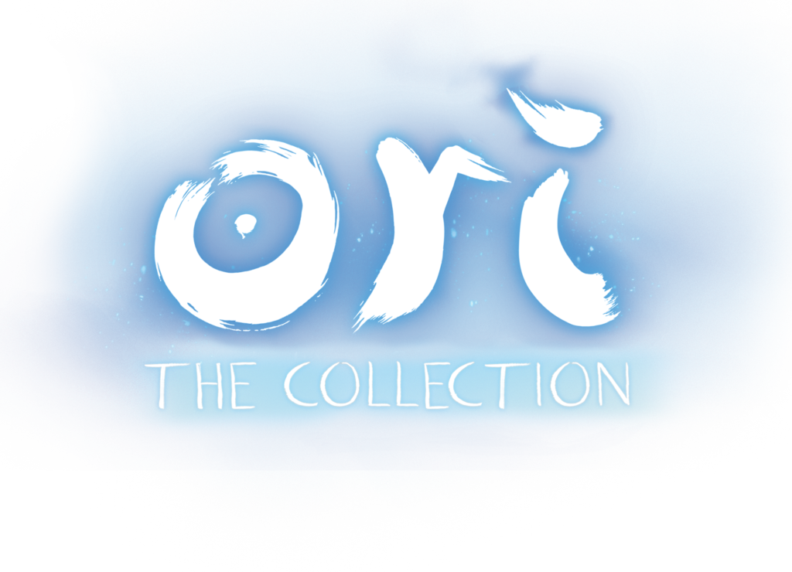

Encorporando o espírito orfão Ori, você embarcará em aventuras repletas de perigos, inimigos e desafios para desvendar os segredos e mistérios que a floresta guarda.
Em Ori você explorará diversos biomas e encontrá vários quebra-cabeças e elementos que te ajudarão a seguir em frente.
Ori é uma série de jogos desafiadores no estilo 2D ação-aventura Metroidvania. Você explorará lagos, cavernas, montanhas e florestas, batalhará com estranhas criaturas e resolverá missões, tudo para salvar a vida da floresta.
O universo de Ori possui um design chamativo, colorido e profundamente detalhado, todo o cenário junto com as criaturas e animais, toda a arte dos jogos foi desenhada a mão com seu estilo único e até mesmo premiado.
Todas as áreas que descobrir serão uma nova experiência audio-visual, como novas trilhas-sonoras, cenários, criaturas e ambientes diversificados. Toda a experiência de Ori já é recompensadora apenas por suas maravilhas visuais que você poderá encontrar.